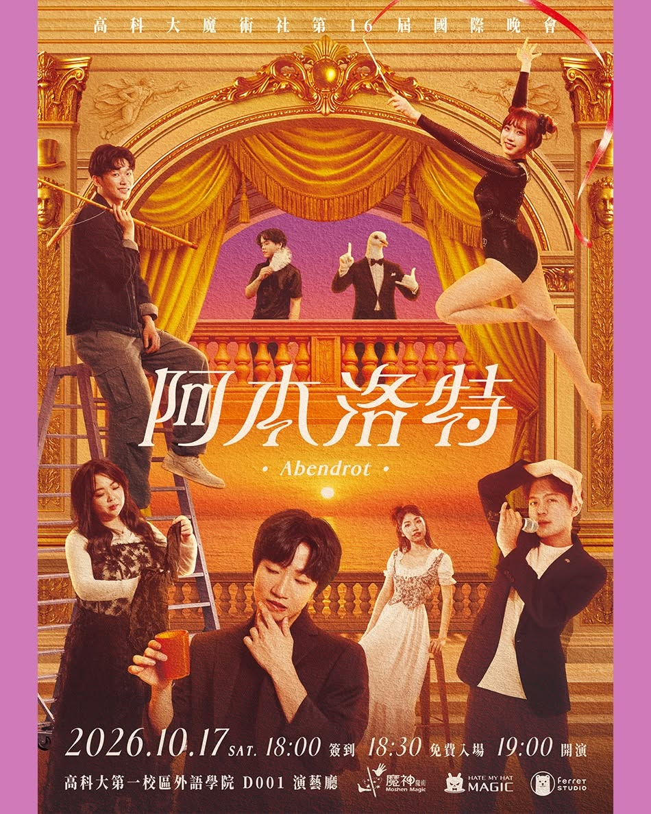
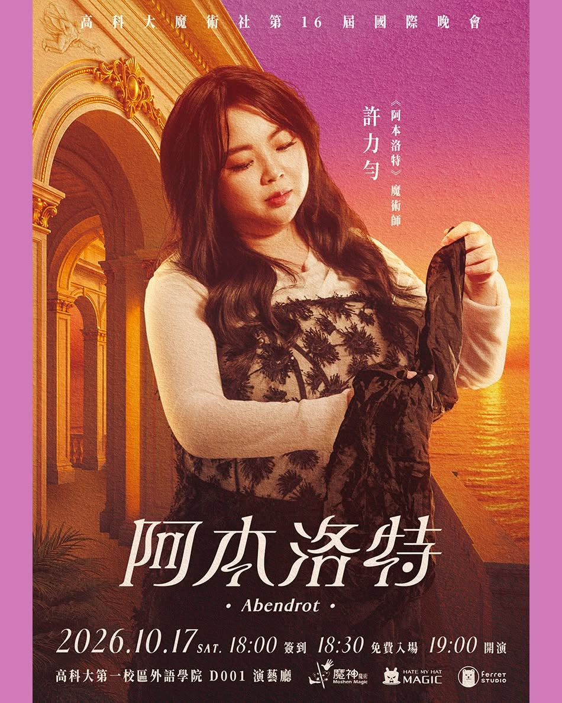
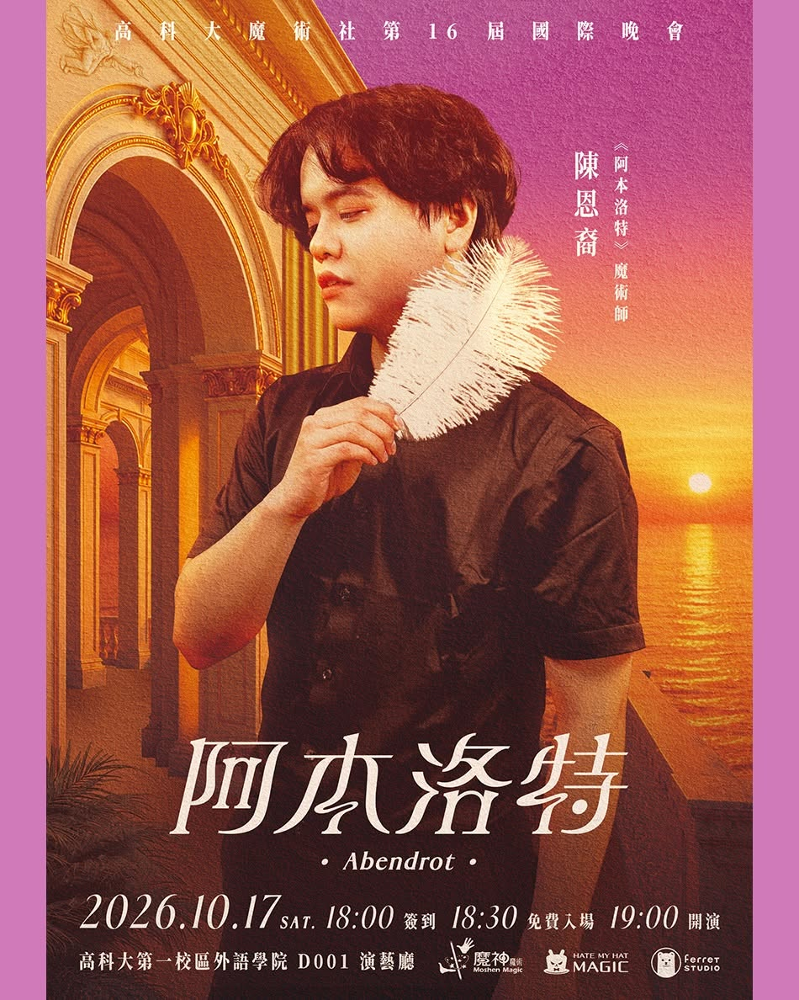
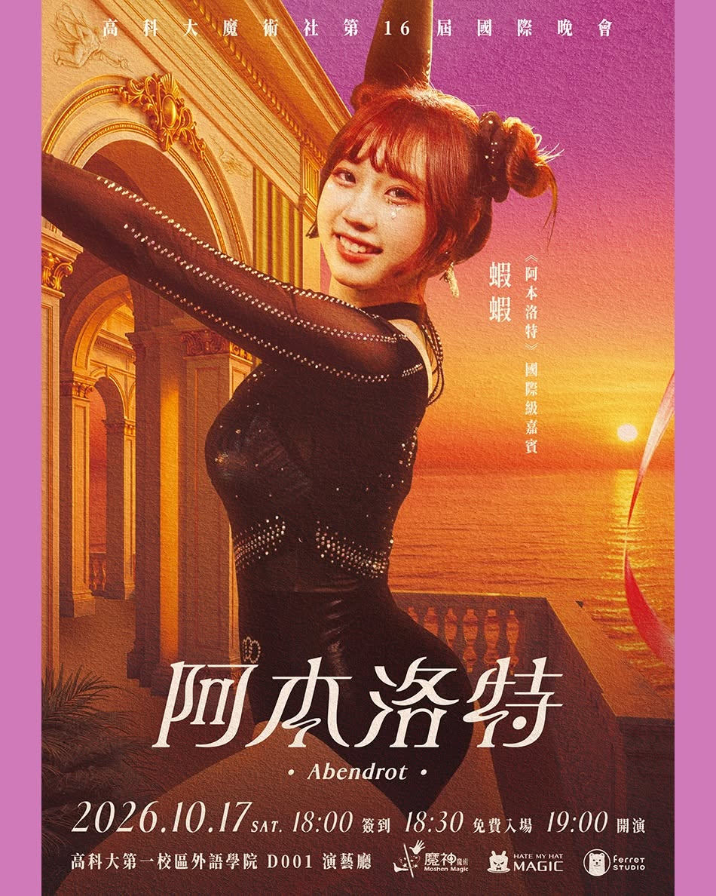
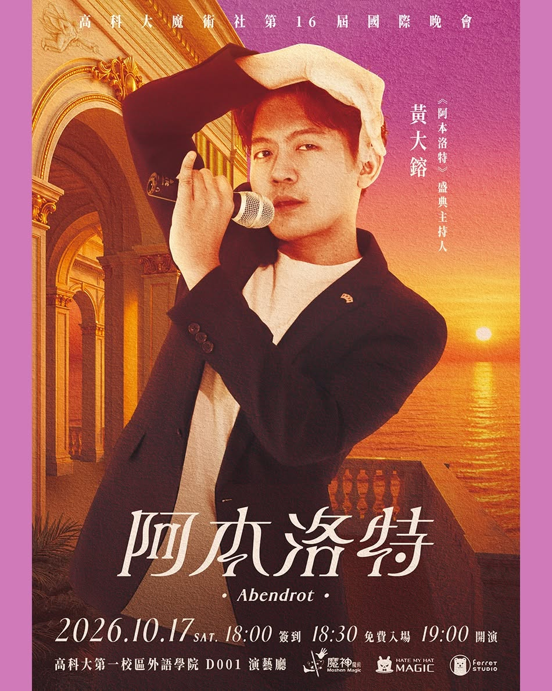
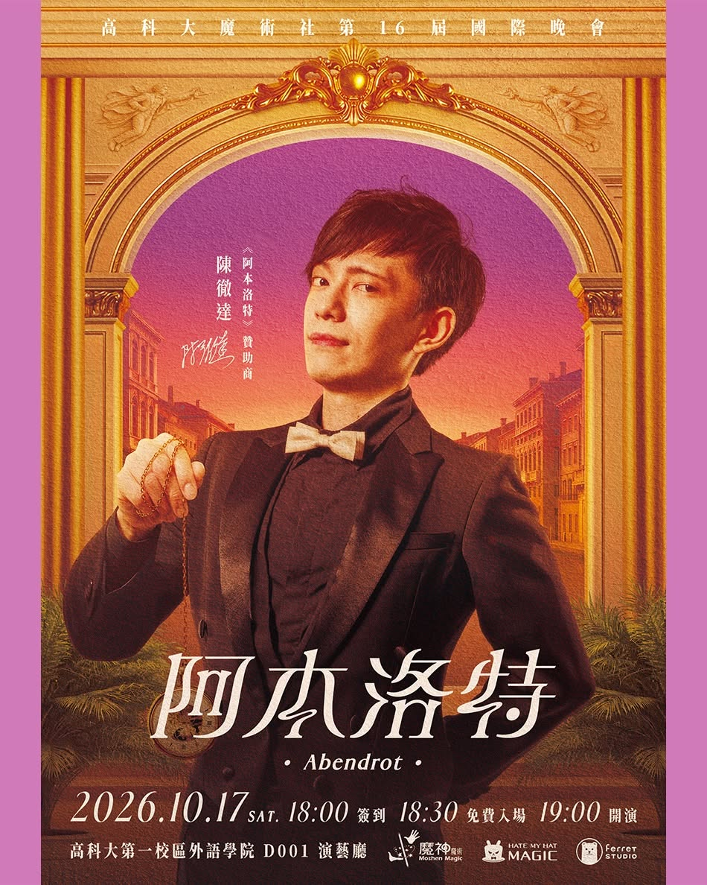
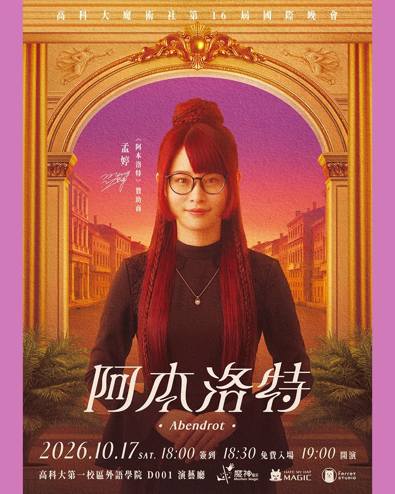

MAGICIAN / 01
盧敬勳
在城邦冒險，配戴裝備，追蹤目標。
THE 16TH ANNIVERSARY MAGIC NIGHT
Abendrot
日落之後，魔術之前。
KAOHSIUNG · TAIWAN · 2026

THE CITY OF ETERNAL SUNSET
老巫師記憶裡，有一座隱於南方、始終沐浴在晚霞中的城邦——阿本洛特。世人遍尋不著，這段往事也成了魔術界尚未證實的傳說。
城中住著深諳魔術與典禮的魔術師。每當盛典揭幕，音律便迴盪殿堂，日落的餘暉映照著一次又一次的不可能。
傳說，唯有對魔術懷抱純粹而堅定的心，那扇大門才會現前。10 月 17 日，跟著高科大魔術社啟程南方，一同見證《阿本洛特》的盛典。
本故事為活動虛構世界觀。
認識城邦裡的魔術師NKUST MAGIC CLUB
高科大魔術社・十六週年演出
四位魔術師，帶著各自的想像，走進永恆晚霞的城邦。
MAGICIAN / 01
在城邦冒險，配戴裝備，追蹤目標。

MAGICIAN / 02
在城邦漫遊，自帶光環，追尋未知。
MAGICIAN / 03
在城邦考察，以球為軸，解構原理。

MAGICIAN / 04
在城邦探索，拾起羽毛，發掘神秘。
01 / 國際魔術嘉賓 · 韓國
跨越重洋，震撼盛典。
橫跨舞台與近距離魔術，將音樂、肢體與節奏融入演出。這次帶來兩套作品：以跳棒結合肢體與光影的舞台演出，以及運用杯與球的近距離作品《Orange》。

02 / 特邀魔術嘉賓 · 台灣
翩然降臨，驚艷盛典。
身兼魔術師、社群創作者與體操選手，將體操的肢體語彙融入魔術。2025 年於 TMA 獲得四項獎項，本次受邀帶來最新版本的演出作品。

03 / 晚會主持人 · 台灣
三度掌麥，揭幕盛典。
活躍於國際魔術大會與演出現場，以幽默串起舞台上的驚奇。「小手程序」曾於美國 4F 演出，並獲 2025 TMA 近距離季軍；這次第三度受邀擔任高科大魔術社晚會主持人。

PARTNER / 01
陳炳榮
長年投入南台灣魔術演出與教學，創辦魔神魔術公司，也是高雄市魔術協會創會元老。另創立樂轉魔方、發起高雄市魔方協會，持續推廣魔術與魔方教育。

PARTNER / 02
陳徹達
透過魔術知識文章與近距離教學影片，讓更多人走進魔術。曾於 TMA × 獨角獸獲超新星第二名，並持續投入魔術交流、出版與活動籌辦。

PARTNER / 03
孟婷 MT
本次《阿本洛特》的發想與視覺設計。將故事、光影、字體與音樂融入視覺，參與國內外魔術活動規劃，以及撲克牌、書封、產品包裝與品牌設計。
2026.10.17 星期六
18:00 簽到18:30 入場 / 19:00 開演
19:30 最後入場
BEFORE YOU ARRIVE
由一位主要報名人填寫本人與同行者的姓名、手機號碼。送出後，系統會自動寄送填答副本至所填電子信箱。
當日 18:00 起辦理簽到，請攜帶有效證件供核對。座位由主辦單位安排。
18:30 入場、19:00 開演；實際演出時間依現場安排為準。
FIND YOUR WAY
演出地點位於高科大第一校區外語學院 B1F D001 演藝廳。出發前請確認交通路線與班次，並預留步行及簽到時間。
有報名或活動問題，請私訊官方 Facebook 或 Instagram。
主辦單位保留節目異動及活動最終解釋權；最新消息請以官方 Facebook、Instagram 公告為準。
YOUR VISIT TO ABENDROT
免費入場・實名制報名・座位由主辦單位安排
01 / BEFORE FILLING IN
名單填寫格式
王小明 09XXXXXXXX（自己） 陳小華 09XXXXXXXX 李小花 09XXXXXXXX
以上為格式示意，請在表單填寫實際姓名與手機。
若 5 歲以上未成年孩童無手機，請填寫法定代理人（父母）的手機。
02 / AFTER REGISTERING
系統會自動寄至主要報名人的電子信箱；若 3 日內未收到，請先查看垃圾郵件，有疑問請聯絡官方 FB 或 IG。
請攜帶本人與同行者的有效身分證件供核對，並自行妥善保管。名額不得轉讓。
建議 5 歲以上孩童參與。若演出中影響他人觀賞，工作人員有權請觀眾與孩童暫離演藝廳。
主要報名人須在表單確認已詳閱，並代表同行者同意與遵守須知；送出前也須確認會留意電子信箱。
本活動免費入場，採填寫『 實名制 』表單報名。主辦單位得基於社團活動安全、秩序維護、社群及現場風險管理考量，保留報名與入場資格之最終審核權。
本活動表單所蒐集之資料僅供簽到核對、緊急情況聯繫以及校方備查使用。請務必配合填寫正確資訊，且報名名額不得轉讓。
本活動座位數量有限，優先保留部分座位予本社資深校友、邀約單位、特邀貴賓、歷屆贊助商以及高科大115-1入學大一新生。報名後座位由主辦單位安排，座位數量有限，額滿為止。
送出表單後，系統將自動寄送『 報名副本 』至主要報名人電子信箱。若 3 日內未收到副本，請先查看垃圾郵件；如有疑問請洽高科大魔術社 FB 或 IG。
活動日當天 18:00 請攜帶『 本人與同行者的有效身分證件 』核對簽到，並請自行妥善保管證件。若現場遺失或無法確認身分，可能會影響入場權益，主辦單位亦無法受理相關情事。
建議 5 歲以上孩童參與。演出中若影響他人觀賞權益，工作人員有權請該觀眾與孩童暫離演藝廳，敬請見諒。
主辦單位保有變更活動內容之權利，活動相關內容與異動資訊將公布於高科大魔術社 FB 或 IG，恕不另行通知，亦不補償因此產生之個人損失。
如因班機延誤、健康狀況等不可抗力因素導致嘉賓異動或缺演，主辦單位保有內容調整權，請以活動當日實際演出為準。
如因天災預報等不可抗力因素取消活動，將於高科大魔術社 FB 或 IG 公告；若活動進行中因故取消，主辦單位保有最終解釋及調整權利。如遇取消相關情事，主辦單位恕不補償觀眾之交通、住宿或其他相關費用。造成不便，敬請見諒！
凡由『 主要報名人 』統一填寫表單，即視為同行者接受代為報名之委託與同意本報名須知之所有規定。
交通路線、地圖及乘車資訊僅供參考。路況與大眾運輸班次可能變動，請出發前自行確認最新交通狀況，預留充裕時間；主辦單位恕不承擔因交通衍生的行程延誤責任。
活動資訊與異動皆公告於官方 Facebook 與 Instagram，恕不另行通知；活動問題也請透過官方社群聯絡。